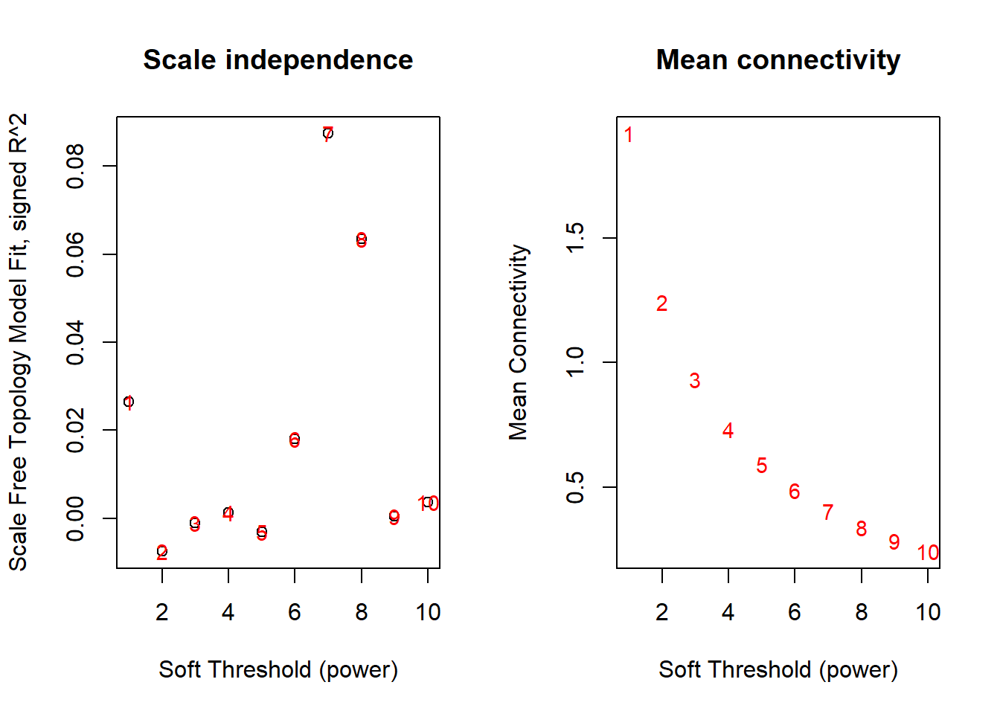
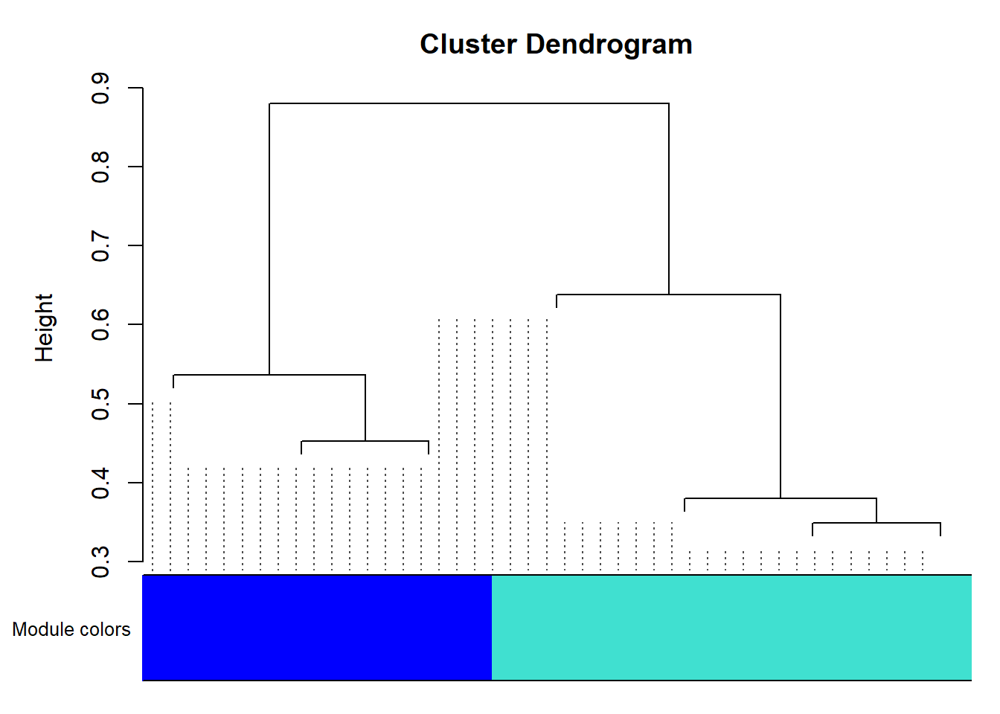

8.9 Biological Networks .
What are biological networks? What do they represent (networks encode relationships between entities)? Why are biological networks useful and what can we learn from them?
8.9.1 Biological Pathways .
What is a biological pathway? Why are they important, and how are they useful?
8.9.2 Gene Regulatory Networks .
What are gene regulatory networks? Why are they important? How do we identify them (data driven correlation, wetlab experiments, others?)? How are they useful?
8.9.3 Protein-Protein Interaction Network .
What are protein-protein interaction (PPI) networks? What information do they represent (direct association, functional association, etc)? Where does PPI information come from (datasets, databases, etc)? What are some ways we can use PPI information when interpreting other biological data (like differential expression? not sure)?
8.9.4 WGCNA .
Weighted correlation network analysis (WGCNA) identifies genes (or other biology features) that are highly correlated with each other, and group them into clusters / modules.
Typical inputs of WGCNA is the expression matrix of genes, proteins or other biology features. Then, WGCNA will construct a undirected and weighted co-expression network. The nodes will be genes (or other features), and the edges connecting them will be the pairwise correlation value of their expression level. Modules are simply the clusters of highly connected genes. After the modules are detected, down stream analyses may include summarizing the module by its “eigengenes,” inferring the functionality of a gene from genes in the same module, or compare different modules.
For more information, you may refer to this article or the manual of WGCNA R package.
8.9.4.1 How to run WGCNA in R
First, install package WGCNA.
BiocManager::install("WGCNA")
library(WGCNA)note: if you receive error message saying some dependencies are not available, it’s probably because you used to try to install it using standard method install.package("WGCNA"). If that’s the case, try the following to re-install WGCNA:
BiocManager::install("WGCNA",force = T)Let’s load a toy gene expression matrix. We have 15 samples and 7 genes.
## CRAB Whale Lobst Octop Coral BabyShark Orca
## samp1 6.867731 8.796212 7.820130 6.6081601 15.37307 14.047536 32.96333
## samp2 10.918217 6.775947 16.545788 7.5685123 28.59193 8.923224 19.13865
## samp3 5.821857 8.682239 5.089099 2.8030264 17.99007 14.643098 36.93207
## samp4 17.976404 5.741274 27.596721 8.8660342 34.62918 9.473205 18.68929
## samp5 11.647539 10.866047 14.852970 2.2034360 14.15414 15.949892 42.21472
## samp6 5.897658 11.960800 15.915636 -0.1724085 21.78596 16.336686 44.93125An optional choice in WGCNA to allow multithreads
allowWGCNAThreads(4)## Allowing multi-threading with up to 4 threads.Now we will choose a “soft-thresholding power” to construct the network. There is no single answer in the power to choose.
If you refer to WGCNA faq, there are more details for power choosing.
# A set of soft-thresholding powers to choose from:
powers <- seq(1, 10)
# Call the network topology analysis function
sft <- pickSoftThreshold(
data = dat,
powerVector = powers,
verbose = 5
)## pickSoftThreshold: will use block size 7.
## pickSoftThreshold: calculating connectivity for given powers...
## ..working on genes 1 through 7 of 7
## Power SFT.R.sq slope truncated.R.sq mean.k. median.k. max.k.
## 1 1 0.026500 -12.800 0.38900 1.920 1.820 2.350
## 2 2 0.007510 2.420 -0.18500 1.240 1.180 1.730
## 3 3 0.001090 0.582 0.00340 0.931 0.908 1.430
## 4 4 0.001300 -0.460 -0.14200 0.733 0.708 1.220
## 5 5 0.003130 0.526 -0.03820 0.592 0.556 1.060
## 6 6 0.018100 -1.150 0.04810 0.486 0.440 0.922
## 7 7 0.087400 -2.130 -0.15900 0.404 0.349 0.807
## 8 8 0.063500 -1.570 -0.11100 0.338 0.279 0.708
## 9 9 0.000378 -0.206 0.00319 0.285 0.224 0.621
## 10 10 0.003650 -0.600 -0.00478 0.241 0.181 0.545par(mfrow = c(1, 2))
cex1 <- 0.9
plot(sft$fitIndices[, 1],
-sign(sft$fitIndices[, 3]) * sft$fitIndices[, 2],
xlab = "Soft Threshold (power)",
ylab = "Scale Free Topology Model Fit, signed R^2",
main = paste("Scale independence")
)
text(sft$fitIndices[, 1],
-sign(sft$fitIndices[, 3]) * sft$fitIndices[, 2],
labels = powers, cex = cex1, col = "red"
)
abline(h = 0.90, col = "red")
plot(sft$fitIndices[, 1],
sft$fitIndices[, 5],
xlab = "Soft Threshold (power)",
ylab = "Mean Connectivity",
type = "n",
main = paste("Mean connectivity")
)
text(sft$fitIndices[, 1],
sft$fitIndices[, 5],
labels = powers,
cex = cex1, col = "red"
)
Generally, we want to choose a power that give us the “Scale Free Topology Model Fit, signed R^2” around 0.8. This toy dataset is too small and can’t show it properly.
For illustration, we will pick power 4 in this example.
picked_power <- 4
# fix a namespace conflict issue, force R to use the cor() function in WGCNA:
temp_cor <- cor
cor <- WGCNA::corConstruct network.
There are a lot of parameters. In most cases, you don’t need to modify them. But, make sure you choose the proper power, networkType (“signed” or “unsigned”), and minModuleSize in your analysis.
- networkType Using “signed” option, the direction of the correlation will be considered, e.g. two genes won’t be clustered together if their correlation value is a perfect -1. On the other hand, use “unsigned” option to consider the absolute value of correlation.
- minModuleSize The minimum umber of features, e.g. genes, in a module. In this example with only 7 genes, so I set this argument to be 2. In real analysis, a typical choice may be 20 or 30 for a matrix with several hundreds or thousands of genes.
netwk <- blockwiseModules(
datExpr = dat,
power = picked_power,
networkType = "signed",
deepSplit = 2,
pamRespectsDendro = F,
minModuleSize = 2,
maxBlockSize = 4000,
reassignThreshold = 0,
mergeCutHeight = 0.25,
saveTOMs = T, # Archive the run results in TOM file (saves time)
saveTOMFileBase = "ER",
numericLabels = T,
verbose = 3
)## Calculating module eigengenes block-wise from all genes
## Flagging genes and samples with too many missing values...
## ..step 1
## ..Working on block 1 .
## TOM calculation: adjacency..
## ..will not use multithreading.
## Fraction of slow calculations: 0.000000
## ..connectivity..
## ..matrix multiplication (system BLAS)..
## ..normalization..
## ..done.
## ..saving TOM for block 1 into file ER-block.1.RData
## ....clustering..
## ....detecting modules..
## ....calculating module eigengenes..
## ....checking kME in modules..
## ..merging modules that are too close..
## mergeCloseModules: Merging modules whose distance is less than 0.25
## Calculating new MEs...Now we can see the module membership assignment:
netwk$colors## CRAB Whale Lobst Octop Coral BabyShark Orca
## 1 2 1 1 1 2 2CRAB, Lobst, Octop and Coral are assigned to module 1. Whale, BabyShark and Orca are assigned to module 2.
We can use function labels2colors() to conveniently convert the module membership to color labels.
mergedColors <- labels2colors(netwk$colors)Plot the dendrogram and the module colors:
plotDendroAndColors(
netwk$dendrograms[[1]],
mergedColors[netwk$blockGenes[[1]]],
"Module colors",
dendroLabels = FALSE,
hang = 0.03,
addGuide = TRUE,
guideHang = 0.05
)
In a real analysis with a lot of genes, you will see much more modules and colors.
In this dendrogram, you will be able to roughly see the size of each module by looking at the area of different colors.
At this point, the WGCNA analysis is finished.
We can summarize the module information in a data frame:
module_df <- data.frame(
gene_id = names(netwk$colors),
modules = labels2colors(netwk$colors)
)
module_df## gene_id modules
## 1 CRAB turquoise
## 2 Whale blue
## 3 Lobst turquoise
## 4 Octop turquoise
## 5 Coral turquoise
## 6 BabyShark blue
## 7 Orca blue